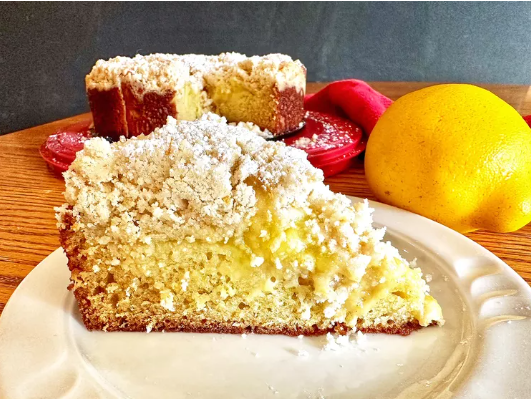

Lemon Crumb Cake

Ingredients
Crumb Topping
- 1 1/2 cups all-purpose flour
- 1/2 cups white sugar
- 2 tablespoons lemon zest
- 1 teaspoon freshly squreezed lemon juice
- 1/4 teaspoon salt
- 1/2 cup cold butter, diced
Cake
- 1 1/2 cups all-purpose flour
- 1/2 teaspoon baking soda
- 1/4 teaspoon salt
- 1 cup white sugar
- 1/2 cup butter, softned
- 3 large eggs, at room temperature
- 1 teaspoon vanilla extract
- 2 tablespoons lemon zest
- 1/4 cup freshly squeezed lemon juice
- 1 cup lemon curd
- 1 tablespoon confectioners sugar, or as needed, for dusting (optional)
Steps
- Preheat the oven to 350 degrees F (175 degrees C). Grease a 9-inch springform pan. Set aside.
- Make crumb topping by combining 1 1/2 cups flour, 1 cup sugar, 2 tablespoons lemon zest, 1 teaspoon
lemon juice, and 1/4 teaspoon salt. Cut in cold butter until mixture resembles coarse sand. Set aside.
- In another bowl combine 1 1/2 cups flour, baking soda, and 1/4 teaspoon salt.
- In a large bowl, beat 1/2 cup butter and 1 cup sugar until creamy. Add eggs, one at a time, beating
after each addition. Add lemon extract, vanilla, 2 tablespoons lemon zest and 1/4 cup lemon juice.
Add dry ingredients and mix just until all ingredients are moistened.
- Spread batter into pan, top with lemon curd and add crumble evenly over top. Bake until a toothpick
inserted near the center comes out clean, 35 to 40 minutes. Let cool on a wire rack. Remove springform
pan; sprinkle confectioner's sugar over top of cake.
Back to Home